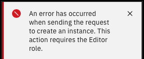

In this click-thru demonstration, explore the management activities for a VMware as a Service instance on IBM Cloud. All steps that are shown here can be used in the IBM Technology Zone (ITZ) environment you provisioned up to the point of clicking Create or Delete. Attempts to create new resources in the ITZ environment results in an error similar to the one shown.

Click-Thru demonstration
Use the click-thru demonstration to practice. The fields that require a text entry (for example Provider Virtual Data Center name) are pre-populated in the click-thru demonstration.
Navigation in the click-thru demonstration.
Not sure where to click or what to do next? Click anywhere on the screen within the click-thru demo page and the spot to interact with next is highlighted. Step-by-step instructions on how to run the demo follow.
Step-by-step Instructions
Manage a site
-
Open the click-thru demo and then click play
 to begin the demonstration.
to begin the demonstration.Click-thru demo: Manage a site and Provider Virtual Data Center (PVDC)
-
Click the Cloud director sites (1) tab.
- Click the down arrow () to expand the se-le-site site.
- Click the se-le-site link in the table.
- Click the Actions drop-down menu.
Notice that the Delete instance option is not enabled. A site cannot be deleted unless all associated virtual data centers (VDCs) are removed.
- Click the Refresh option.
Refreshing the page will query the backend services and refresh all the data on the page. In this case, no changes have occurred, so you will not see any changes.
- Click the Infrastructure tab.
The details of the cluster created when the the site was provisioned is shown here.
- Click Edit host quantity.
VMwaaS on IBM Cloud allows administrators to scale clusters both up (25 hosts maximum) and down (minimum of 2 for NFS-only clusters, or minimum of 6 for vSAN clusters).
VMwaaS clusters only supports hosts of the same profile.
- Click Cancel.
- Click Edit NFS storage.
More NFS storage can be added to the cluster in 24 terabyte (TB) increments. More storage tiers can also be added. Take note of the message about completion times.
- Click Cancel.
- Click the Add cluster +.
More clusters can be added to a PVDC. Clusters can only have hosts with homogeneous profiles. While it is possible to create clusters that use different host profiles, it is not recommended. VDCs deployed to a PVDC can use all compute, memory, and storage within the PVDC, including when multiple clusters exist. To get consistent workload performance, it is best if all clusters within the same PVDC use the same host profile type. VMware Cloud Director automatically selects and adjusts the placement of workload VMs across the clusters in the PVDC. Placement is not controlled by users or administrators with VMware Cloud Director. All clusters are combined within a PVDC with no fine grain control for workload placement.
A new PVDC is typically created for the following scenarios:
-
Separate and isolate different types of workloads. If different workloads are better suited for different host types, then separate PVDCs are required to ensure each workload runs on the correct host type.
-
Run workloads in different data centers within the region. All clusters in the same PVDC must be in the same data center. Regional high availability across data centers is achieved by creating PVDCs in separate data centers, and then deploying the virtual data center (VDC) and applications into each region. A load balancer is used to route requests to active instances of the target workload.
- Click Cancel.
- Click the ellipses () icon.
From this menu, it is possible to delete a cluster. Workload virtual machines (VMs) are deployed in virtual data centers (VDCs) that logically exist in the scope of a PVDC. PVDCs physically consist of one or more VMware vCenter clusters. When the PVDC contains multiple clusters and one cluster is deleted, all VMs running in that cluster are migrated to other clusters in the same PVDC.
VMs deployed to a specific storage performance tier are only migrated to the same performance tier of storage in the remaining clusters. Clients must ensure that the remaining clusters have compatible storage performance layers of the deleted cluster. The remaining clusters must also have enough CPU and memory to contain the VMs of the deleted cluster.
If not enough CPU, RAM, or equivalent storage for the cluster exists, the delete operation does not succeed. When the delete cluster operations are not successful, workloads are not impacted, and the operation is retried. Resource constraints are resolved by either stopping or deleting VMs or ensuing other clusters in the PVDC have the resource to support migrated workload VMs.
- Click the Virtual Data Center tab.
It is possible to add VDCs here or from the main VDC page. A second VDC will be added in the next chapter.
- Click the Network edges tab.
Recall when the first VDC was created a Performance - M edge cluster was requested.
- Click the Add-on services tab.
If any Add-on services were provisioned in the site, they would appear here.
- Click Add service +.
From this screen, it is possible to deploy Veeam or any other services that are available. Expect to see more services soon.
- Click Return to resource.
- Click the Summary tab.
In the next chapter, learn how to add and managed VDCs.